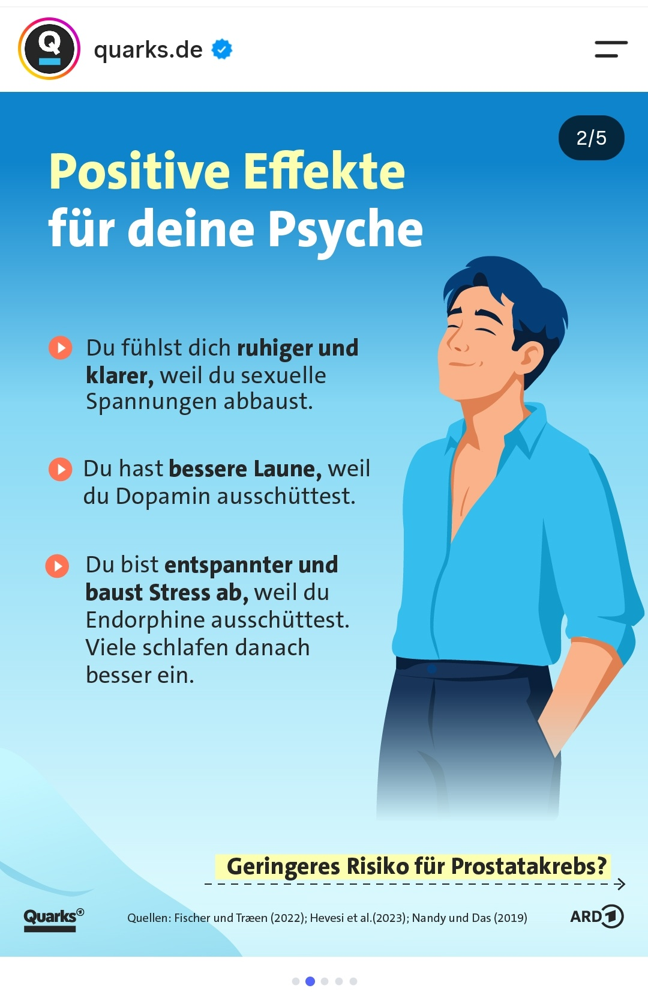
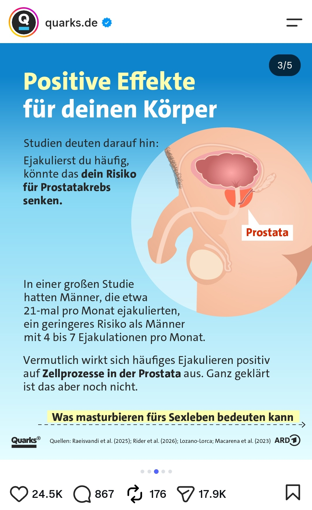
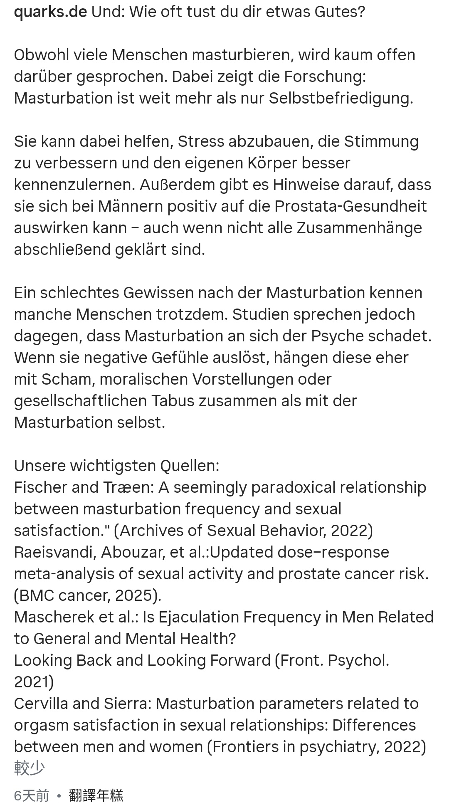

為什麼自慰對男性（通常）真的很好
https://www.instagram.com/p/Dd5cyL-igHa/?img_index=3&stkn=bzB5ajlkaXdhdHl6








① 為什麼自慰對男性（通常）真的很好
Darum tut Masturbieren Männern (meistens) richtig gut
👉 這就是為什麼自慰對男性（大多數情況下）真的很好。
- darum = 因此、這就是為什麼
- tun + jemandem + gut = 對某人有益、讓某人感覺很好
- meistens = 大多數時候、通常
- richtig gut = 非常好、真的很好
Mach’s dir selbst!
👉 自己來吧！／自己解決一下吧！
這裡是 sich etwas machen 的口語用法，在這個語境就是「自慰」。
Denn das hat viele positive Effekte für deine Psyche und deinen Körper.
因為這對你的心理狀態和身體有很多正面影響。
- denn = 因為
- positive Effekte = 正面影響
- Psyche = 心理、心理狀態
- Körper = 身體
② 對心理狀態的正面影響
Positive Effekte für deine Psyche
👉 對你的心理狀態有正面影響
Du fühlst dich ruhiger und klarer, weil du sexuelle Spannungen abbaust.
👉 你會感覺比較平靜、思緒比較清晰，因為你釋放了性方面的緊張感。
這句很值得學：
sich fühlen + 形容詞
Du fühlst dich ruhiger.
你感覺比較平靜。
Spannungen abbauen
= 消除／釋放緊張、壓力
Stress abbauen
消除壓力
sexuelle Spannungen abbauen
釋放性緊張
Du hast bessere Laune, weil du Dopamin ausschüttest.
👉 你的心情會比較好，因為你會釋放多巴胺。
- gute Laune haben = 心情好
- bessere Laune haben = 心情變得更好
- Dopamin ausschütten = 釋放多巴胺
注意：
Laune = 心情、情緒
Ich habe heute gute Laune.
我今天心情很好。
Ich habe schlechte Laune.
我心情不好。
Du bist entspannter und baust Stress ab, weil du Endorphine ausschüttest.
👉 你會更加放鬆，也能減輕壓力，因為你會釋放腦內啡。
- entspannt = 放鬆的
- Stress abbauen = 減輕／釋放壓力
- Endorphine ausschütten = 釋放腦內啡
Viele schlafen danach besser ein.
👉 很多人之後會更容易入睡。
這裡的：
einschlafen = 入睡
所以：
Ich kann nicht einschlafen.
我睡不著。
Ich schlafe danach besser ein.
我之後比較容易入睡。
③ 對身體的正面影響
Positive Effekte für deinen Körper
👉 對你的身體有正面影響
Studien deuten darauf hin:
👉 研究顯示／研究指出：
這個片語非常常見：
auf etwas hindeuten
= 指向、顯示、暗示某件事
Die Studien deuten darauf hin, dass …
研究指出……
Ejakulierst du häufig, könnte das dein Risiko für Prostatakrebs senken.
👉 如果你經常射精，這可能會降低你罹患前列腺癌的風險。
這句是德文很典型的倒裝／條件句。
原本可以理解成：
Wenn du häufig ejakulierst, könnte das dein Risiko … senken.
但這裡把 Wenn 拿掉：
Ejakulierst du häufig, könnte das …
= 如果你經常射精，可能……
das Risiko für … senken
= 降低……的風險
Das kann das Risiko für Krebs senken.
這可能降低癌症風險。
In einer großen Studie hatten Männer, die etwa 21-mal pro Monat ejakulierten, ein geringeres Risiko als Männer mit 4 bis 7 Ejakulationen pro Monat.
👉 在一項大型研究中，每個月大約射精 21 次的男性，其風險低於每個月射精 4～7 次的男性。
這裡的關係子句：
Männer, die etwa 21-mal pro Monat ejakulierten
= 每個月射精約 21 次的男性
etwa = 大約
21-mal pro Monat = 每個月 21 次
Vermutlich wirkt sich häufiges Ejakulieren positiv auf Zellprozesse in der Prostata aus.
👉 推測頻繁射精可能會對前列腺中的細胞活動產生正面影響。
很重要的片語：
sich auf etwas auswirken
= 對某事產生影響
Das wirkt sich positiv auf die Gesundheit aus.
這對健康有正面影響。
positiv auf etwas auswirken
= 對……產生正面影響
Ganz geklärt ist das aber noch nicht.
👉 不過，目前這一點還沒有完全弄清楚。
這裡是倒裝：
Ganz geklärt ist das aber noch nicht.
正常語序可以想成：
Das ist aber noch nicht ganz geklärt.
geklärt = 被釐清、被弄清楚
所以：
Das ist noch nicht geklärt.
這件事還沒有被釐清。
這句很實用。
④ 對性生活的影響：取決於「為什麼」
Effekte für die Sexualität: Es kommt auf das Warum an
👉 對性生活的影響：關鍵在於「為什麼」。
這個句型非常值得記：
Es kommt auf … an.
= 取決於……／關鍵在於……
Es kommt auf die Situation an.
要看情況。
Es kommt auf das Wetter an.
要看天氣。
這裡：
das Warum
就是把 warum（為什麼） 名詞化：
👉 「為什麼」這件事／背後的原因
Beim Masturbieren kannst du deinen Körper besser kennenlernen und deine Wünsche und Vorlieben besser verstehen.
👉 自慰時，你可以更了解自己的身體，也能更了解自己的慾望和偏好。
- beim Masturbieren = 在自慰時
- kennenlernen = 認識、了解
- Wünsche = 願望、慾望
- Vorlieben = 偏好、喜好
這裡：
deinen Körper besser kennenlernen
直譯就是：
「更好地認識你的身體」
Es kann dich aber auch unzufriedener machen.
👉 但它也可能讓你變得更加不滿足。
jemanden + 形容詞 machen
= 使某人變得……
Das macht mich glücklich.
那讓我很幸福。
Das macht mich nervös.
那讓我緊張。
這裡：
dich unzufriedener machen
= 讓你變得更加不滿足
Zum Beispiel, wenn du …
👉 例如，如果你……
接下來兩個情況：
Sex dauerhaft ersetzt, obwohl du dir eigentlich Nähe wünschst.
👉 長期用自慰取代性生活，儘管你其實渴望與他人的親密關係。
dauerhaft = 長期地、持續地
ersetzen = 取代
sich Nähe wünschen
= 渴望親密感／親密關係
obwohl = 雖然、儘管
obwohl du dir eigentlich Nähe wünschst
儘管你其實渴望親密關係
dich an sehr feste Reize gewöhnst, sodass du beim Sex schwieriger kommen kannst.
👉 習慣了非常強烈／固定的刺激，以至於你在做愛時可能會比較難達到高潮。
這裡有一個很重要的句型：
sich an etwas gewöhnen
= 習慣某事物
Ich gewöhne mich an das Wetter.
我正在習慣這個天氣。
Du gewöhnst dich an sehr feste Reize.
你習慣了非常固定／強烈的刺激。
sodass
= 因此、以至於
…, sodass du beim Sex schwieriger kommen kannst.
= ……以至於你做愛時可能更難高潮。
kommen 在這裡是性語境下的口語用法：
👉 達到高潮
⑤ 結論
Fazit:
👉 結論：
Masturbation an sich ist kein Problem.
👉 自慰本身不是問題。
an sich
= 本身、就其本身而言
Das ist an sich kein Problem.
這本身不是問題。
Sie sollte sich aber gut für dich anfühlen.
👉 但它應該讓你感覺良好。
sich gut anfühlen
= 感覺很好／讓人感覺舒服
Das fühlt sich gut an.
這感覺很好。
⑥ 最後一張的貼文文字
Und: Wie oft tust du dir etwas Gutes?
👉 還有：你多久會做一次對自己有益的事情？
這裡 sich etwas Gutes tun 是很常見的片語：
sich etwas Gutes tun
= 做些對自己有益／讓自己開心的事情
Obwohl viele Menschen masturbieren, wird kaum offen darüber gesprochen.
👉 雖然很多人會自慰，但幾乎沒有人公開談論這件事。
- obwohl = 雖然
- kaum = 幾乎不
- offen darüber sprechen = 公開談論這件事
Dabei zeigt die Forschung:
👉 然而，研究顯示：
dabei 在這裡有「而事實上／與此同時」的語氣。
Masturbation ist weit mehr als nur Selbstbefriedigung.
👉 自慰遠遠不只是自我滿足而已。
weit mehr als …
= 遠遠不只是……
Selbstbefriedigung
= 自慰、自我滿足
Sie kann dabei helfen, Stress abzubauen, die Stimmung zu verbessern und den eigenen Körper besser kennenzulernen.
👉 它可以幫助減輕壓力、改善情緒，以及更了解自己的身體。
這裡是三個並列的 zu + Infinitiv：
dabei helfen, Stress abzubauen
幫助減輕壓力
die Stimmung zu verbessern
改善情緒
den eigenen Körper besser kennenzulernen
更了解自己的身體
Außerdem gibt es Hinweise darauf, dass sie sich bei Männern positiv auf die Prostata-Gesundheit auswirken kann
👉 此外，有一些證據顯示，自慰可能對男性的前列腺健康產生正面影響。
Hinweise darauf, dass …
= 有跡象／證據顯示……
auch wenn nicht alle Zusammenhänge abschließend geklärt sind.
👉 儘管目前還沒有完全釐清所有相關因素。
auch wenn = 即使／儘管
Zusammenhänge = 關聯、因果關係
abschließend = 最終地、徹底地
geklärt = 釐清
Ein schlechtes Gewissen nach der Masturbation kennen manche Menschen trotzdem.
👉 不過，有些人在自慰之後仍然會感到內疚。
ein schlechtes Gewissen haben
= 有罪惡感／感到內疚
這是一個非常重要的德文片語：
Ich habe ein schlechtes Gewissen.
我有罪惡感／我覺得很內疚。
Studien sprechen jedoch dagegen, dass Masturbation an sich der Psyche schadet.
👉 然而，研究並不支持「自慰本身會傷害心理健康」這種說法。
gegen etwas sprechen
= 不支持某件事／與某事相矛盾
Die Studien sprechen dagegen.
研究結果並不支持這一點。
Wenn sie negative Gefühle auslöst, hängen diese eher mit Scham, moralischen Vorstellungen oder gesellschaftlichen Tabus zusammen als mit der Masturbation selbst.
👉 如果自慰引發負面情緒，那些負面情緒更可能與羞恥感、道德觀念或社會禁忌有關，而不是自慰本身。
這句比較難，核心結構是：
mit A zusammenhängen
= 與 A 有關
以及：
eher mit A … als mit B
= 與 A 的關係比較大，而不是 B
所以：
hängen diese eher mit Scham … zusammen als mit der Masturbation selbst
= 這些負面情緒比較可能與羞恥感……有關，而不是與自慰本身有關。
📌 這組貼文最值得你學的德文
| 德文 | 中文 |
|---|---|
| jemandem guttun | 對某人有益 |
| Stress abbauen | 減輕壓力 |
| Spannungen abbauen | 釋放緊張 |
| gute Laune haben | 心情好 |
| sich entspannen | 放鬆 |
| einschlafen | 入睡 |
| auf etwas hindeuten | 顯示、暗示 |
| das Risiko senken | 降低風險 |
| sich auf etwas auswirken | 對……產生影響 |
| auf etwas ankommen | 取決於…… |
| sich an etwas gewöhnen | 習慣…… |
| sich etwas wünschen | 渴望…… |
| etwas ersetzen | 取代…… |
| sich gut anfühlen | 感覺很好 |
| sich etwas Gutes tun | 做對自己有益的事 |
| ein schlechtes Gewissen haben | 感到內疚 |
| gegen etwas sprechen | 不支持某事 |
| mit etwas zusammenhängen | 與某事有關 |
| weit mehr als | 遠遠不只是…… |
| abschließend geklärt | 徹底釐清 |